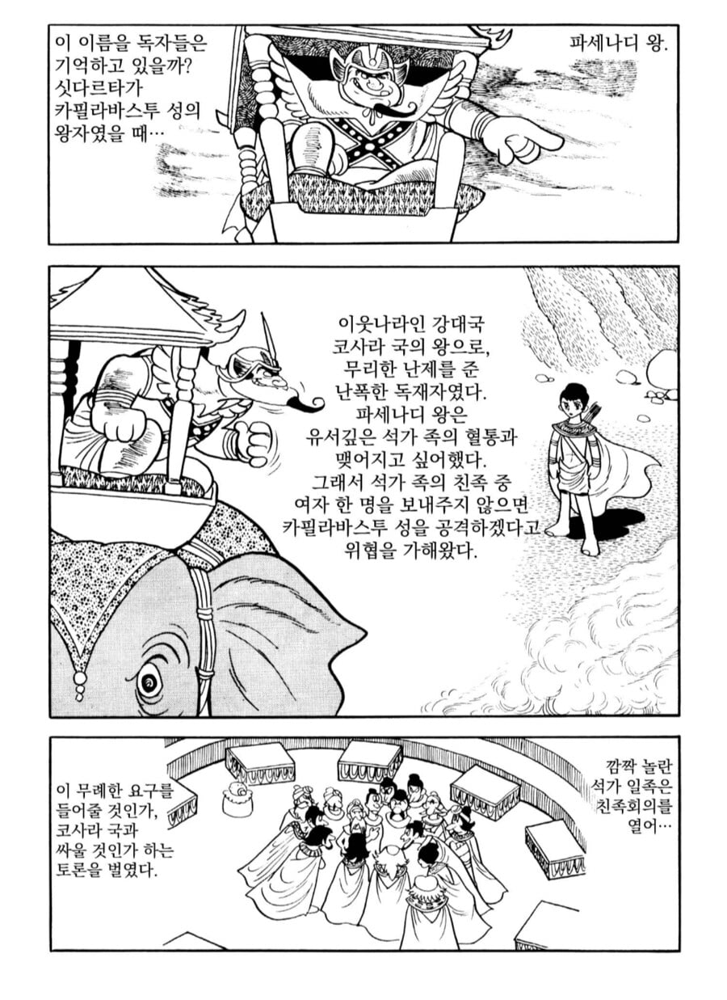
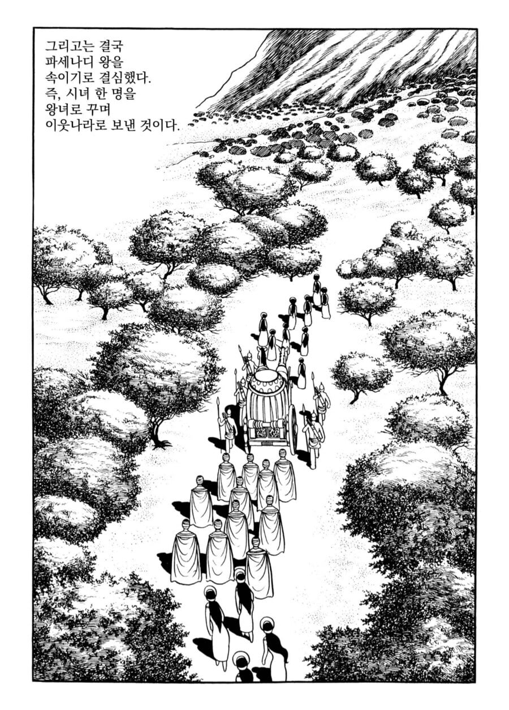
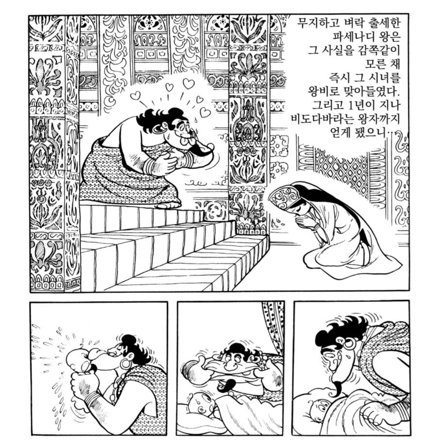
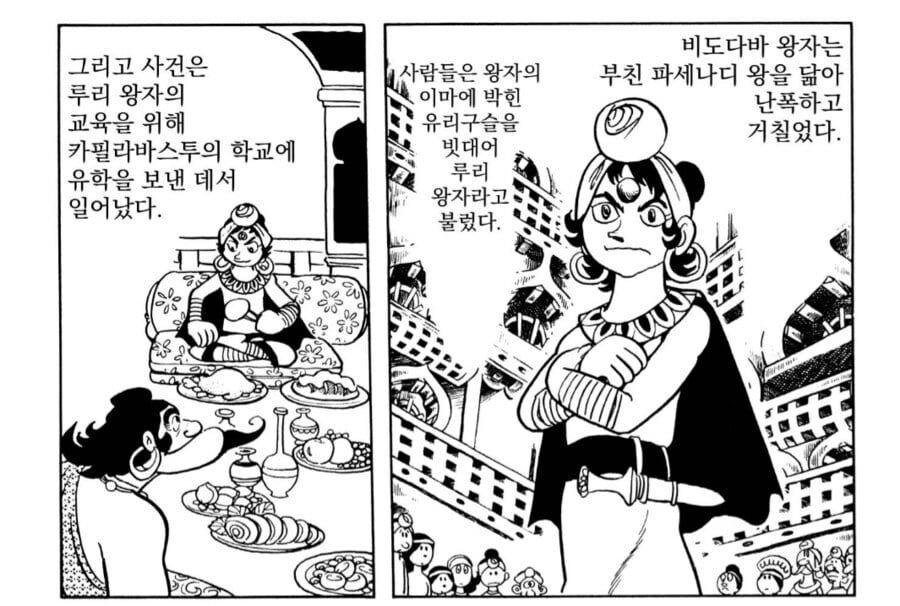
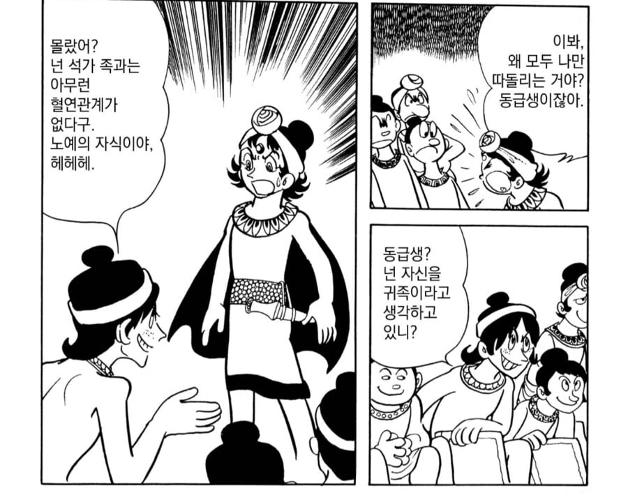
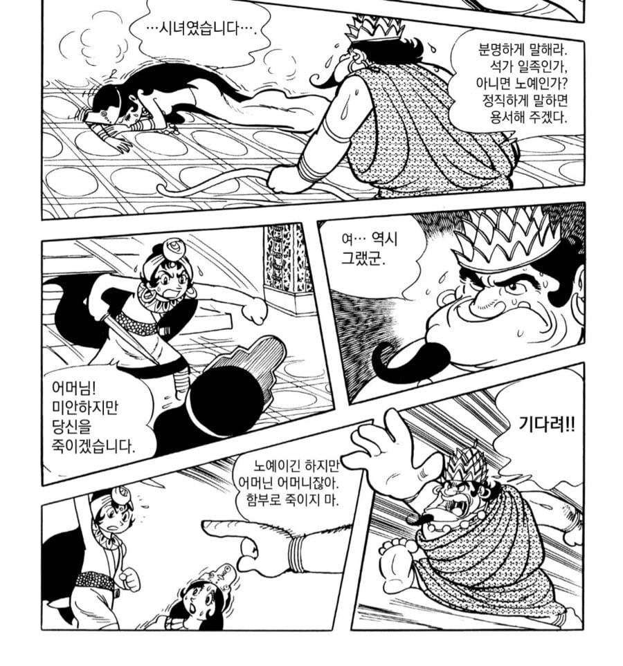
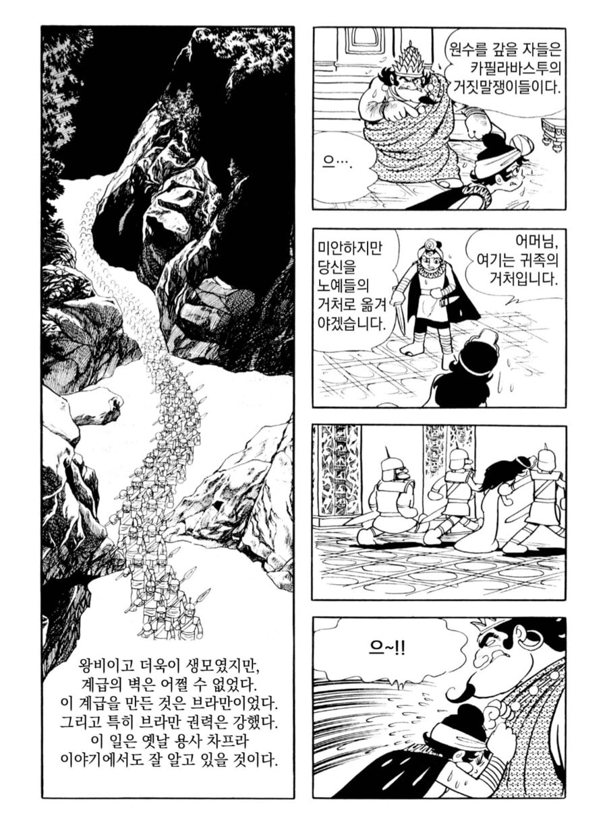
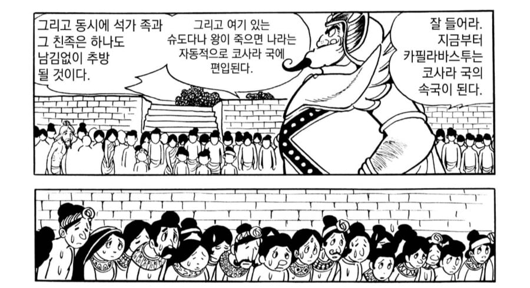
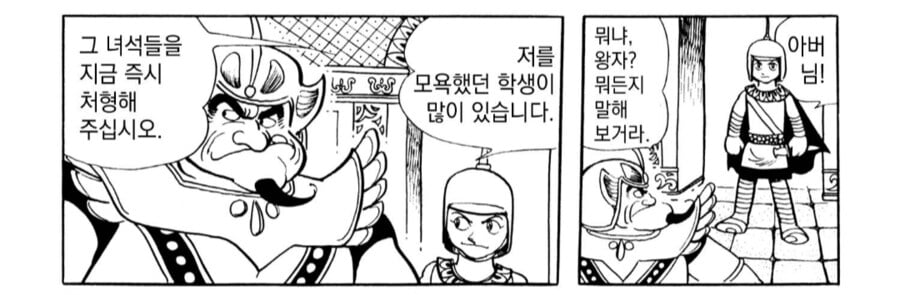
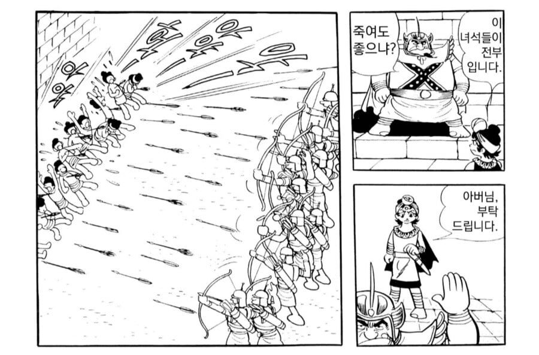

저게 왜 폭군?????
서주 대효도도 없고 주지육림도 없고 산채로 끓는기름에 던지지도 않고 분서갱유를 한것도 아니고 수레바퀴보다 큰건 다 죽인것도 아니고 일가친척 9촌까지 몰살하지도 않고 사람을 돼지 밥으로 주지도 않는데?
진짜 폭군이 뭔지 보여줘?
댓글
수집 당시 댓글 38개
벚꽃색사고싶어요 · 12 시간 전
생매장도 안했잖아 무난한대?
정상화의신 · 12 시간 전
그럴만한데?
하이브마인드 · 12 시간 전
죽을짓한놈들만 죽고 석가족 죽인것도아니도 추방? 인자하신데?
병원이오안심하세요 · 12 시간 전
비극이 아니라 통계 보여줘?
아쿠아콜라 · 12 시간 전
저정도는 할만한데 라는 생각먼저 드네 ㅋㅋㅋㅋㅋㅋㅋㅋㅋㅋㅋㅋㅋㅋㅋ
배고픈누렁이 · 12 시간 전
왜 깝침? 나같으면 친하게 지내면서 콩고물이나 받아먹겠다
감자깡 · 6 시간 전
계급에 종속된 자들의 말로
멍청멍청이 · 11 시간 전
인자 한데?
바미기르 · 11 시간 전
난 붓다 만화가 불교 역사 얘긴줄알았는데 그냥 다자이 오사무가 지어낸 얘기더라
컬러브 · 11 시간 전
이 말 듣고 찾아보니 여기 나온 내용조차도 실제와 많이 다르네. 실제론 유학이 아니라 외가 방문. 외가 쪽은 숨기려고 했는데, 궁녀들의 뒷담화("위에서 노예의 아들이 지나가서 더러워진 곳을 청소하래") 때문에 이야기가 새버림. 왕자는 화가 났지만 참음. 진실을 알게 된 파세나디 왕은 왕자도 노예로 강등. 하지만 부처가 "혈통은 어머니가 아닌 아버지의 것을 받는 법인데, 어머니가 노예라고 왕자도 노예인 게 말이 됨?"이라고 말하자 파세나디 왕은 맞는 말이라고 왕자의 신분을 다시 회복시킴. 파세나디 왕이 죽고, 왕자가 왕이 되자 바로 복수하기 위해 외가를 침공하여 짓밟아버림.
양웬리0 · 1 시간 전
왕이죽고 복수하는게 아니라 쿠데타로 왕위를 찬탈함
뿔난용 · 11 시간 전
데즈카 오사무 입니다
지나가는김개붕 · 8 시간 전
다자이 오사무는 인간실격이고
좋은말좋은생각좋은행동 · 4 시간 전
부끄러운 댓글을 달았습니다. 나에게 이름이란것은 도무지 이해할 수 없는 것입니다.
임금잡채 · 1 시간 전
ㅋㅋㅋㅋ
젤상혁 · 37 분 전
아잇 다자이 오사무가 만화도 그린줄알았네
빚의전사 · 37 분 전
데스카 오사무식 만화연출의 특징이더라. 읽고 있는 지금 당장 재미와 감동을 끌어올수 있다면 사실이나 고증은 그냥 무시해버림. 이양반 만화를 보면 그래서 작위적이거나 사실적이지 않은 내용전개가 많은데, 블랙잭같은 만화는 막 그냥 동물과 사람을 수술로 이어붙이는 내용이 나오는가 하면 혈액형 구별도 안하고 수혈하고 그럼. 이것때문에 '이게 말이 되느냐'하고 의대생들의 비난 엽서가 출판사에 쇄도하자 '멍청한 놈들이다. 만화에 안되는게 어디있느냐. 그건 그런 세계다.' 라는 말을 자기 만화 작가 코멘트에 날려버림. (데스카 오사무 본인도 의사) 그외에도 제목이 기억 안나는데 어느만화에서 뜬금없이 어떤 캐릭터를 죽여버리는데 어시가 '얘가 왜 죽나요.' 라고 물어보자 '그편이 감동적이잖아.' 라고 대답했다는 일화가 있는데 그걸 들은 젊을 적 미야자키 하야오가 '연출 뭐같이 하네 맥락도 없이 뭐하는 짓임?' 하는 투의 비판을 한적 있음. 반대로 미야자키의 연출 스타일은 스토리에 나오지 않는 수백 수천년간의 역사가 설정으로 존재해서 만화 한컷이나 인물의 대사에서 그 배경 역사가 스며들어 있는걸 볼 수 있는데 일본 문화계에서 시조새급 거장으로 분류되는 두 인물의 연출 스타일이 정반대인게 재미있지.
barcas · 11 시간 전
심지어 나중에 어머니가 역병으로 죽자 시체를 끌어안고 오열함ㅋㅋ
토달볶음우동 · 11 시간 전
킹덤맞좀 볼래?
쿠크다스 · 11 시간 전
어디가 문젠거지? 하면서 봤는데 별 문제도 없네?
시진핑빨리죽었으면 · 10 시간 전
어디가 문제인거지?
북두신켄 · 10 시간 전
인자한디 ㅋㅋ
SeinundZeit · 10 시간 전
걸주를 기준으로 놓고 보면 연산군도 성군이 되지 않겠느냐...
북두신켄 · 9 시간 전
음 아닐걸 2년동안 걸주급 미친짓 한놈인디요
SeinundZeit · 9 시간 전
그래 네 말이 맞아
ki1147521 · 10 시간 전
5호 16국시대 보면 타 민족들 유입되면서 한족을 사람으로 생각 안하는거 같았음 뭐 이건 바이킹도 비슷비슷한거 같기도 사람이 교류가 없고 문화가 다르면 한없이 잔인해지는듯
메이 · 10 시간 전
이게 왜 폭군?
영양제먹거라 · 9 시간 전
저 때는 왕이나 태자 모욕하면 저 정도는 각오해야지
Alchemy · 9 시간 전
음? 그냥 사기꾼 처단하는 애처가 아님?
적회사반 · 2 시간 전
와 이거 고등학교때 학교에 있어서 읽었던 책인데
주관적인요정 · 1 시간 전
걍 좆도 없으면서 선민의식으로 똘똘뭉친 어느 민족이 떠오르는데
Rhesus · 1 시간 전
왕자보고 저딴식으로 얘기했으면 뒤질 각오는 하고 했어야지
존나잘쉬는청년 · 1 시간 전
뭐가 문제인 데스웅
블랙체리 · 1 시간 전
한국 > 삼족을 멸함 중국 > 구족을 멸함 일본은 모르겠지만 규모만 다르지 우리는 싹을 통째로 도려낸다고 ㅋㅋㅋ
아무말대연회 · 1 시간 전
저 사건이 유일하게 부처님이 내정간섭을 했던 사건임. 파세나디왕이 눈알이 돌아서 군사를 끌고 친정을 했는데 부처님이 진군로 한가운데 뙤약볕에 앉아 계셨음. 이때쯤엔 이미 파세나디 왕도 부처님께 귀의하고 믿음이 깊은 불자였기에 말에서 내려 부처님께 인사를 올렸다. 바로 몇십 걸음만 걸으면 숲이 있는데 왜 이 뙤약볕에 나와서 참선중이냐고 물으시니까 부처님께서 " 친족의 그늘만큼 편안한 그늘은 어디에도 없습니다. " 라고 대답하심. 썩어도 준치고 눈이 돌았어도 왕이라고, 파세나디도 예쁘게 돌려 말하는 귀족의 화법을 알기 때문에 시발좆발까진 못하고 그냥 이 꽉물고 떠남. 근데 이 다음에 정확히 뭔진 기억이 안나는데 석가족이 또 모멸주는 국지도발 거하게 까서 그땐 개빡쳐서 어택땅 찍었는데 부처님도 안막고 그냥 석가족 멸망해버림
존나잘쉬는청년 · 1 시간 전
훌륭한 조상을 뒀으니까 꾹 참고 한 번 봐줬는데 즈그들이 잘나서 그런 줄 알고 또 깝치다가 가버렸네 ㅋㅋ
네이케프이케키로로 · 17 분 전
첩도아니고 왕이 직접 정실부인으로 받아줌ㅋㅋㅋ 사실상 결혼동맹인데
쿤라이 · 13 분 전
왕한테 거짓말 하고 왕자를 모욕해? 근데 저걸로 끝났어?